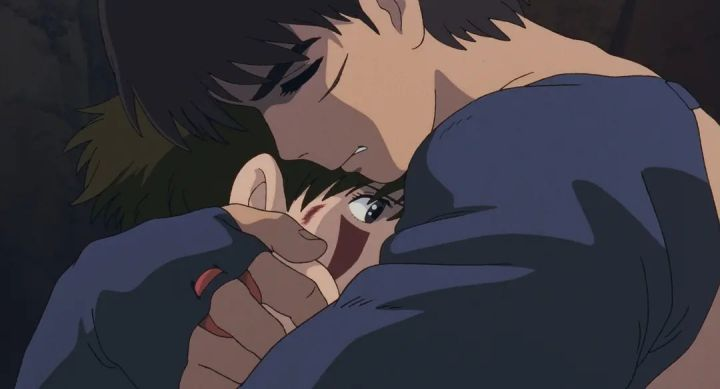

幽灵公主
故事背景
是由宫崎骏执导，日本吉卜力工作室制作，于1997年夏季推出的一部动画电影。电影讲述在幻想的室町时代里，一名虾夷少年为了找出自己受诅咒的原因而离开家园，之后介入了一场人类与森林神祇两方的冲突事件。

奖项提名
| 年份 |
奖项 |
项目 |
结果 |
| 1997年 |
第1届文部省文化厅媒体艺术祭 |
动画部门大奖 |
获奖 |
| 第2届神户动画奖 |
剧场电影奖 |
获奖 |
| 演出部门奖 |
获奖 |
| 第10届日刊体育电影大奖石原裕次郎奖 |
最佳导演奖 |
获奖 |
| 第15届GoldenGross |
最优秀金奖 |
获奖 |
| 特别功劳大奖 |
获奖 |
列名项目
- 日本第19届横滨电影节：1997年度10大优秀电影第10名
- 日本电影P.E.N Club协会：1997年度前5大日本电影第1名
- 日本文化厅媒体艺术祭多媒体艺术100选：2006年动画部门前25位作品之一
- 英国导演特里·吉列姆评比前50大动画作品：第26名
- 英国电影杂志《Total Film》评比前50大动画作品：第26名
- 英国电影杂志《帝国》评比前500大最佳电影：第488名
- 美国多媒体杂志《Complex》评比前50大动画作品：第7名
- 美国电子游戏杂志《Gamers' Republic》：年度最佳电影
- 加拿大电影介绍节目《Saturday Night at the Movies》：前20大最佳配乐动画作品之一
- 雅虎日本新闻部平成编年史：平成时代6部顶级动画之一。
曲目
- 阿席达卡传奇（アシタカ𦻙記）
- 邪魔神（タタリ神）
- 被遗忘的人民（失われた民）
- 幽灵公主（もののけ姫）
- 亚克路（ヤックル）
- 山兽神森林（シシ神の森）
- 黑帽大人（エボシ御前）
- 木灵们（コダマ達）
- 犬神莫娜（犬神モロの公）
- 阿席达卡与小桑（アシタカとサン